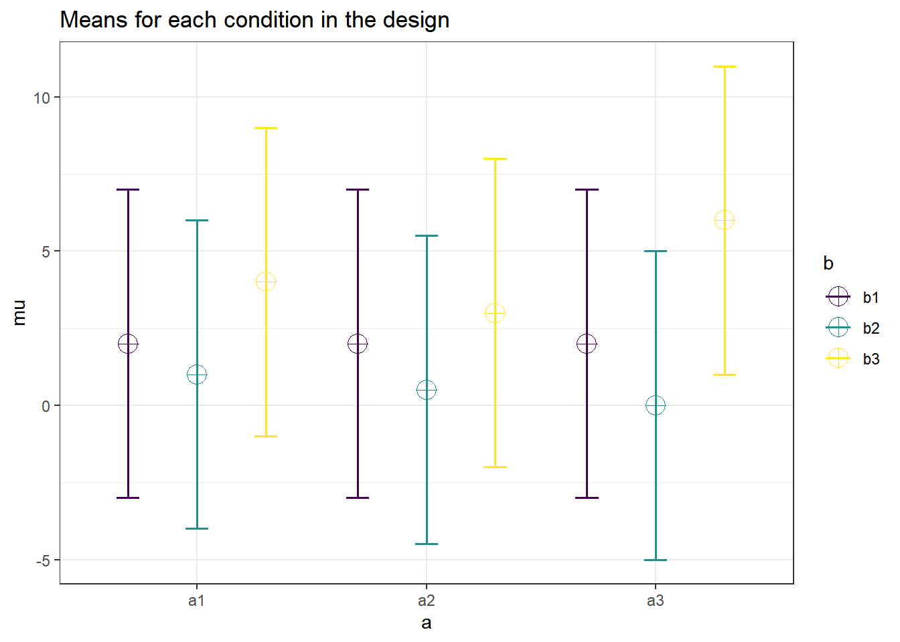

Chapter 4 Mixed ANOVA
So far we have discussed the simple one-way ANOVA, various forms of the repeated measures ANOVA (and multivariate alternatives), but we have not yet looked at “mixed ANOVA” wherein there are between and within subjects factors. Therefore, in this chapter we will show how a power analysis for these designs is performed in Superpower. Further, we will introduce comparisons to SAS’s PROC GLMPOWER which is a very powerful tool when designing mixed factorial experiments.
4.1 Simple Mixed Designs
We can simulate a two-way ANOVA with a specific alpha, sample size and effect size, to achieve a specified statistical power. We will try to reproduce the power analysis in g*power (Faul et al. 2007) for an F-test from an ANOVA with a repeated measures, within-between interaction effect. While g*power is a great tool it has limited options for mixed factorial ANOVAs.
Let us setup a simple 2x2 design.
For the 2-way interaction, the result should be a power of 91.25% with at total sample size of 46. Since we have 2 groups in the between -subjects factor that means the sample size per group is 23 with two measurements per subject (i.e., 2w).

Now, we can repeat the process in Superpower.
mu <- c(-0.25, 0.25, 0.25,-0.25)
n <- 23
sd <- 1
r <- 0.5
string = "2w*2b"
alpha_level <- 0.05
labelnames = c("age", "old", "young", "color", "blue", "red")
design_result <- ANOVA_design(
design = string,
n = n,
mu = mu,
sd = sd,
r = r,
labelnames = labelnames
)simulation_result <- ANOVA_power(design_result,
alpha_level = alpha_level,
nsims = nsims,
verbose = FALSE)| power | effect_size | |
|---|---|---|
| anova_color | 4.45 | 0.0215448 |
| anova_age | 5.29 | 0.0221193 |
| anova_color:age | 91.26 | 0.2155901 |
| power | partial_eta_squared | cohen_f | non_centrality | |
|---|---|---|---|---|
| color | 5.00000 | 0.0000000 | 0.0000000 | 0.0 |
| age | 5.00000 | 0.0000000 | 0.0000000 | 0.0 |
| color:age | 91.24984 | 0.2072072 | 0.5112374 | 11.5 |
Now, we can simulate the same two-way ANOVA but increasing the correlation to r=0.7.

mu <- c(-0.25, 0.25, 0.25, -0.25)
n <- 23
sd <- 1
r <- 0.7
string = "2w*2b"
alpha_level <- 0.05
labelnames = c("age", "old", "young", "color", "blue", "red")
design_result <- ANOVA_design(design = string,
n = n,
mu = mu,
sd = sd,
r = r,
labelnames = labelnames)simulation_result <- ANOVA_power(design_result,
alpha_level = alpha_level,
nsims = nsims,
verbose = FALSE)| power | effect_size | |
|---|---|---|
| anova_color | 4.93 | 0.0220656 |
| anova_age | 4.85 | 0.0224569 |
| anova_color:age | 99.00 | 0.3081551 |
| power | partial_eta_squared | cohen_f | non_centrality | |
|---|---|---|---|---|
| color | 5.00000 | 0.0000000 | 0.0000000 | 0.00000 |
| age | 5.00000 | 0.0000000 | 0.0000000 | 0.00000 |
| color:age | 98.98467 | 0.3034301 | 0.6600046 | 19.16667 |
4.2 Complex Mixed Designs
Now, we are to the most complicated calculations. Similiar to the simple one-way repeated measures ANOVA, a mixed ANOVA assumes sphercity. Therefore, in most situations a multivariate approach, MANOVA, is recommended (Maxwell, Delaney, and Kelley 2004). To our knowledge, the only program that can accurately calculate power for mixed designs with greater than 2 levels is SAS’s PROC GLMPOWER (SAS 2015). The procedure utilizes approximate analytical solutions derived by Muller and Peterson (1984) and O’Brien and Shieh (1999). According to the documentation, these analytical solutions are very accurate for all but small N situations (sorry exercise scientists!). Eventually, this chapter will document the analytical solution in a step-by-step fashion, but for the time being we will just directly compare Superpower to GLMPOWER from a few examples provided by SAS.
4.2.1 2b*3w Design
Here we will use a modified example from SAS (2015) pg. 3739. In this hypothetical experiment, suppose you are planning an experiment to study the growth of two varieties of flowers over the course of 3 weeks. The planned data analysis is a two-way ANOVA with flower height as the outcome and a model with effects of time, flower variety, and their interaction.
First we can set up the dataframe in SAS. This is similiar to the mu command in ANOVA_design.
We can now solve for power in PROC GLMPOWER. In this case, we set up a multivariate repeated measures model, with a total of 40 flowers (20 per variety). We also setup the within-factor correlations with the CORRS command.
proc glmpower data=Exemplary2;
class Variety Exposure;
model Height1 Height2 Height3 = Variety;
repeated Time contrast;
power
mtest = pt
stddev = 5
ntotal = 40
power = .
MATRIX("MyCorrs")= (.75,
0.5625,.75)
CORRS= "MyCorrs";
run;The power analysis results then get printed to the SAS ouput page.

Now let’s replicate this in R with Superpower. First, we setup the same design with ANOVA_design.
cor_1 <- matrix(c(1, .75, .5625,
.75, 1, .75,
.5625, .75, 1), nrow=3)
cor_2 <- cor_1*0
rho_mat <- cbind(rbind(cor_1,cor_2),
rbind(cor_2,cor_1))
design_result <- ANOVA_design("2b*3w",
n = 20,
sd = 5,
mu = c(14, 16, 21,
10, 15, 16),
r = rho_mat,
labelnames = c("VARIETY",
"type1", "type2",
"TIME",
"height1", "height2",
"height3"),
plot = TRUE)
| power | partial_eta_squared | cohen_f | non_centrality | |
|---|---|---|---|---|
| VARIETY | 63.65566 | 0.1287208 | 0.3843667 | 5.614035 |
| TIME | 100.00000 | 0.5877929 | 1.1941377 | 108.373333 |
| VARIETY:TIME | 84.08029 | 0.1273729 | 0.3820535 | 11.093333 |
You will notice a small discrepancy between the two power estimates for the main effect of variety. This difference is due to the analytical solutions problems with small sample sizes. You will see in the example below that the results match when the total sample size is much greater.
4.2.2 2b*4w Design
Now we move onto the example from pg 3794 of SAS (2015).
As stated in the manual:
Logan, Baron, and Kohout (1995) and Guo et al. (2013) study the effect of a dental intervention on the memory of pain after root canal therapy. The intervention is a sensory focus strategy, in which patients are instructed to pay attention only to the physical sensations in their mouth during the root canal procedure. Suppose you are interested in the long-term effects of this sensory focus intervention, because avoidance behavior has been shown to build along with memory of pain. You are planning a study to compare sensory focus to standard of care over a period of a year, asking patients to self-report their memory of pain immediately after the procedure and then again at 1 week, 6 months, and 12 months. You use a scale from 0 (no pain remembered) to 5 (maximum pain remembered).
This makes it a 2b*4w design with treatment as a between subjects factor, with two levels (sensory focus versus standard of care), and time as a within-subject factor is time, with four levels (0, 1, 26, and 52 weeks). In this case, we differ from SAS (2015) and we will solve for power with a sample size of 300 per group (600 total) with an alpha of .01. In addition, we want to see what the impact of chaning the common standard deviation will have on power.
So in SAS we set up the data.
data Pain;
input Treatment $ PainMem0 PainMem1Wk PainMem6Mo PainMem12Mo;
datalines;
SensoryFocus 2.40 2.38 2.05 1.90
StandardOfCare 2.40 2.39 2.36 2.30
;Then we can run the analysis in SAS. Note that in the example SAS (2015) are assuming a linear exponential covariance matrix, which we can mimic in R.
proc glmpower data=Pain;
class Treatment;
model PainMem0 PainMem1Wk PainMem6Mo PainMem12Mo = Treatment;
repeated Time contrast;
power
mtest = pt
alpha = 0.01
power = .
ntotal = 600
stddev = 0.92 1.04
matrix ("PainCorr") = lear(0.6, 0.8, 4, 0 1 26 52)
corrmat = "PainCorr";
run;
quit;This produces a table with the result for a power analysis with 2 different common standard deviations.

We then replicate in R, first by setting up the “lear” correlation matrix.
cor_1 <- matrix(c(1,.6,.491,.399,
.6,1,.495,.402,
.491,.495,1,.491,
.399,.402,.491,1), nrow=4)
cor_2 <- cor_1*0
pain_cor_mat <- cbind(rbind(cor_1,cor_2),
rbind(cor_2,cor_1))
design_result <- ANOVA_design("2b*4w",
n = 300,
mu = c(2.4, 2.38, 2.05, 1.90,
2.4, 2.39, 2.36, 2.30),
sd = .92,
r = pain_cor_mat,
labelnames = c("Treatment", "sensory", "standard",
"TIME", "t1", "t2", "t3", "t4"),
plot = TRUE)
| power | pillai_trace | cohen_f | non_centrality | |
|---|---|---|---|---|
| (Intercept) | 100.00000 | 0.9094197 | 3.1685838 | 6003.874016 |
| Treatment | 68.59334 | 0.0155032 | 0.1254885 | 9.416918 |
| TIME | 99.99995 | 0.0998664 | 0.3330858 | 66.123912 |
| Treatment:TIME | 99.55718 | 0.0531965 | 0.2370344 | 33.486447 |
design_result <- ANOVA_design("2b*4w",
n = 300,
mu = c(2.4, 2.38, 2.05, 1.90,
2.4, 2.39, 2.36, 2.30),
sd = 1.04,
r = pain_cor_mat,
labelnames = c("Treatment", "sensory", "standard",
"TIME", "t1", "t2", "t3", "t4"),
plot = TRUE)
| power | pillai_trace | cohen_f | non_centrality | |
|---|---|---|---|---|
| (Intercept) | 100.00000 | 0.8870909 | 2.8029779 | 4698.297861 |
| Treatment | 55.22151 | 0.0121730 | 0.1110090 | 7.369156 |
| TIME | 99.99672 | 0.0798847 | 0.2946528 | 51.744895 |
| Treatment:TIME | 97.55110 | 0.0421158 | 0.2096843 | 26.204631 |
As we can see, the results for this analysis match SAS perfectly.
References
Faul, Franz, Edgar Erdfelder, Albert-Georg Lang, and Axel Buchner. 2007. “G*Power 3: A Flexible Statistical Power Analysis Program for the Social, Behavioral, and Biomedical Sciences.” Behavior Research Methods 39 (2): 175–91. http://www.psychologie.hhu.de/arbeitsgruppen/allgemeine-psychologie-und-arbeitspsychologie/gpower.html.
Maxwell, S. E., H. D. Delaney, and K. Kelley. 2004. Designing Experiments and Analyzing Data: A Model Comparison Perspective. Avec CD, v. 1. Lawrence Erlbaum Associates. https://designingexperiments.com/.
Muller, Keith E, and Bercedis L Peterson. 1984. “Practical Methods for Computing Power in Testing the Multivariate General Linear Hypothesis.” Computational Statistics & Data Analysis 2 (2): 143–58. https://doi.org/10.1016/0167-9473(84)90002-1.
O’Brien, Ralph G, and Gwowen Shieh. 1999. “Pragmatic, Unifying Algorithm Gives Power Probabilities for Common F Tests of the Multivariate General Linear Hypothesis.” Citeseer. https://pdfs.semanticscholar.org/deda/facfd686feea985e134babc524ceb46f0422.pdf.
SAS. 2015. “The Glmpower Procedure.” In SAS/Stat 14.1 User’s Guide, 3738–98. Cary, NC: SAS Institute Inc. http://support.sas.com/documentation/cdl/en/statug/68162/HTML/default/viewer.htm#statug_glmpower_toc.htm.